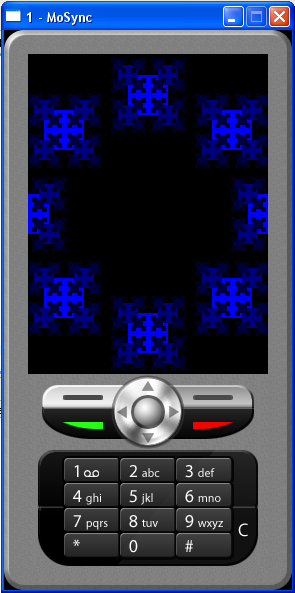

The graphics API provides a set of functions equivalent to those found in the standard MoSync API, with the addition of a transformation stack. This provides a useful mechanism for keeping transformation state without explicitly managing it on the application side. It is useful for any sort of hierarchical rendering, ranging from UI to advanced graphical effects.
The transformation matrix stack is manipulated through a number of functions:
In many cases, especially when dealing with hierarchical UIs, the ability to save and restore multiple levels of clipping rectangles is desirable. The clipping stack provides such a mechanism. It is manipulated using two simple functions:
The following functions are provided for drawing operations, each mapping directly to a corrresponding syscall:
Here's a short example program showcasing the use of the transformation stack. For an example of how to use the clipstack, the source code of MAUI::Engine is recommended.
#include <MAUtil/Moblet.h>
#include <MAUtil/Graphics.h>
#include <madmath.h>
#include <mastdlib.h>
using namespace MAUtil;
/**
* Draws a square centered at the origin with respect to the current
* translation with the given size.
*/
void drawBox(int size)
{
Gfx_fillRect(-size/2, -size/2, size, size);
}
/**
* Draws a blue square at centered at the origin with respect to the current
* translation. Then, recursively, draws four boxes of half the size
* centered at each corner of the original one, and with half the color
* intensity. Then, recurse until the size drops to 2.
*/
void artwork(int size, int color = 0xff)
{
if(size <= 2) return;
// Save transformation state.
Gfx_pushMatrix();
maSetColor(color);
// Draw main box
drawBox(size);
// Draw the four corner boxes
Gfx_pushMatrix();
Gfx_translate(-size/2, -size/2);
artwork(size/2, color >> 1);
Gfx_popMatrix();
Gfx_pushMatrix();
Gfx_translate(size/2, -size/2);
artwork(size/2, color >> 1);
Gfx_popMatrix();
Gfx_pushMatrix();
Gfx_translate(size/2, size/2);
artwork(size/2, color >> 1);
Gfx_popMatrix();
Gfx_pushMatrix();
Gfx_translate(-size/2, size/2);
artwork(size/2, color >> 1);
Gfx_popMatrix();
// Restore transformation state.
Gfx_popMatrix();
}
class MyMoblet : public Moblet
{
private:
int exitStartX;
int exitStartY;
public:
MyMoblet()
{
// Aquire screen dimensions
MAExtent scrSize = maGetScrSize();
int width = EXTENT_X(scrSize);
int height = EXTENT_Y(scrSize);
// Clear initial state of transformation matrix.
Gfx_clearMatrix();
// ...and save it
Gfx_pushMatrix();
// Let's start at the center of the screen...
Gfx_translate(width/2, height/2);
// ...and move around in a circle.
for(int i = 0; i < 8; i++)
{
float theta = 2*M_PI*i/8;
// We need to save and restore the transformation matrixc
// for each instance of "artwork" we draw along the circle
// path.
Gfx_pushMatrix();
// Position our pseudo-fractals along a circle that
// scales to fill the screen.
int scale = height > width ? width : height;
Gfx_translate((scale/2)*cos(theta), (scale/2)*sin(theta));
artwork(scale/6);
Gfx_popMatrix();
}
// Restore original transformation matrix
Gfx_popMatrix();
// Draw exit "button"
maSetColor(0xffffff);
const char* msg = "Exit";
MAExtent textSize = maGetTextSize(msg);
exitStartX = width - EXTENT_X(textSize) - 5;
exitStartY = height - EXTENT_Y(textSize) - 5;
maDrawText(exitStartX, exitStartY, msg);
maUpdateScreen();
}
void keyPressEvent(int keyCode)
{
// Exit using right softkey
if(keyCode == MAK_SOFTRIGHT)
maExit(0);
}
void keyReleaseEvent(int keyCode)
{
// todo: handle key releases
}
/*
* Simple exit handling for touch/stylus devices, enabling
* users to simply press the softkey label saying "Exit"
*/
void pointerPressEvent(MAPoint2d p)
{
if(p.x > exitStartX && p.y > exitStartY)
maExit(0);
}
};
/**
* Entry point of the program. The MAMain function
* needs to be declared as extern "C".
*/
extern "C" int MAMain()
{
Moblet::run(new MyMoblet());
return 0;
};
